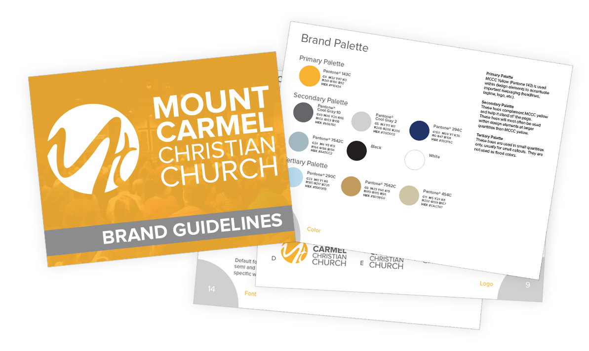
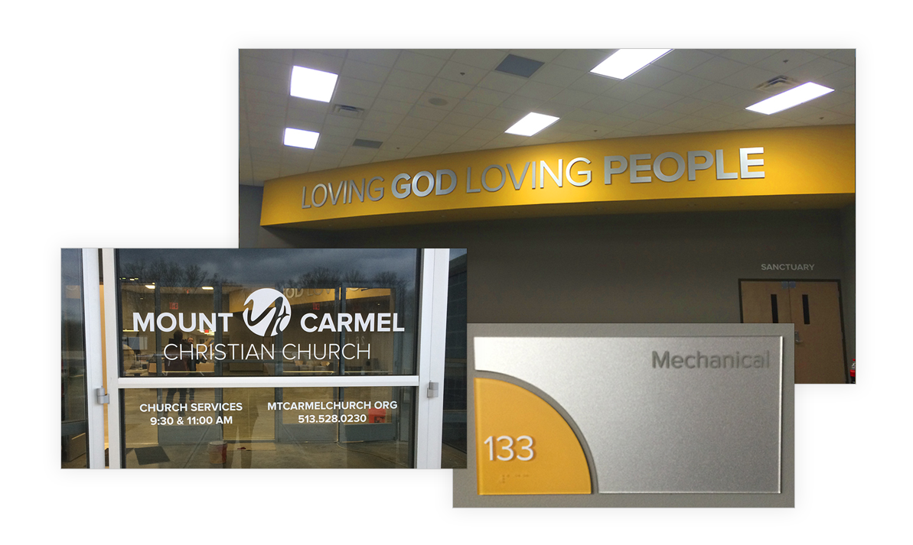

Mount Carmel Christian Church didn’t have a distinctive brand when they moved into a new building. They wanted their branding to reflect two important aspects of the organization: the contemporary architecture of the new building and Mount Carmel’s modern values.
Looking to attract a newer and younger demographic, I focused on creating a contemporary color palette that connected with the church’s core values of being comfortable, inviting, and relevant.

The goal for Mount Carmel’s logo was to reflect the modern values of the organization and to represent the uniqueness of everyone associated with the church. An inviting yellow was thoughtfully chosen as the primary palette.
Creating an impactful brand and logo that could easily translate into large scale graphics was an important aspect for the church. We carried the contemporary palette into the building and combined it with larger than life type, imagery, and other graphics to strengthen Mt. Carmel’s overall presence.

 Previous Project
Previous Project